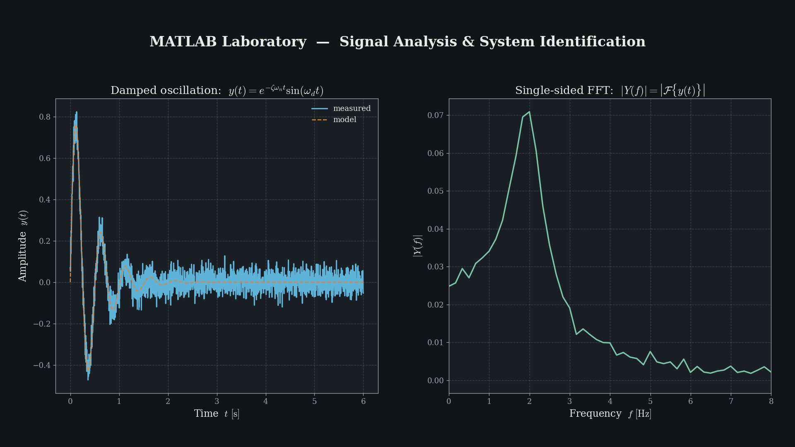
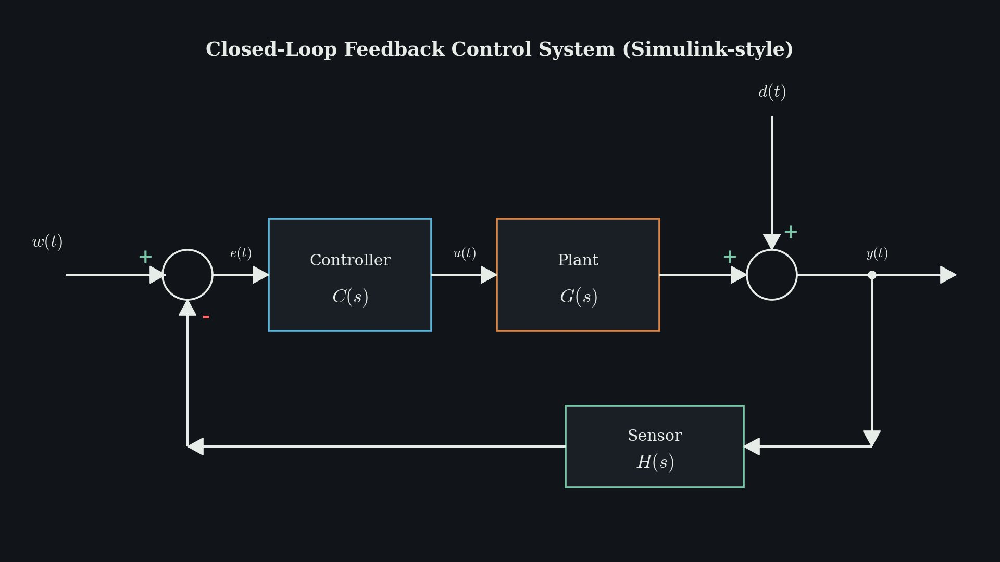
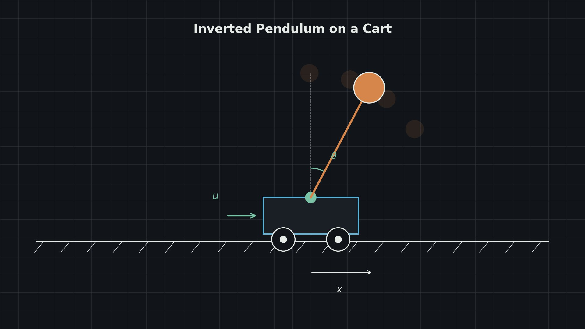
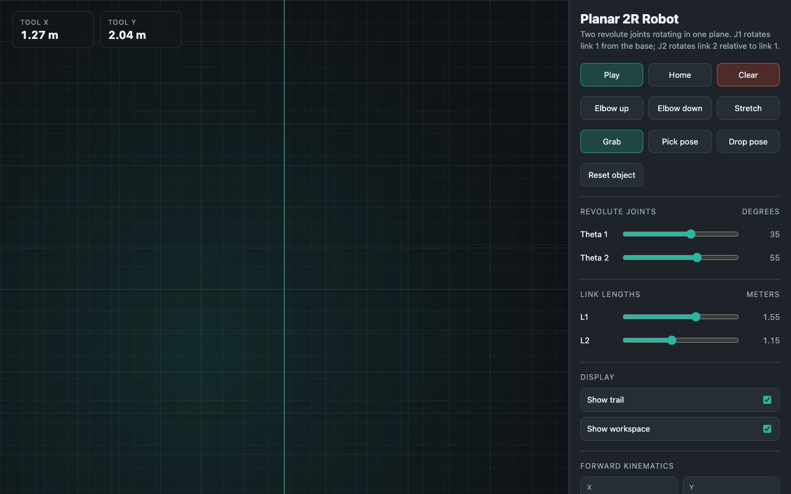
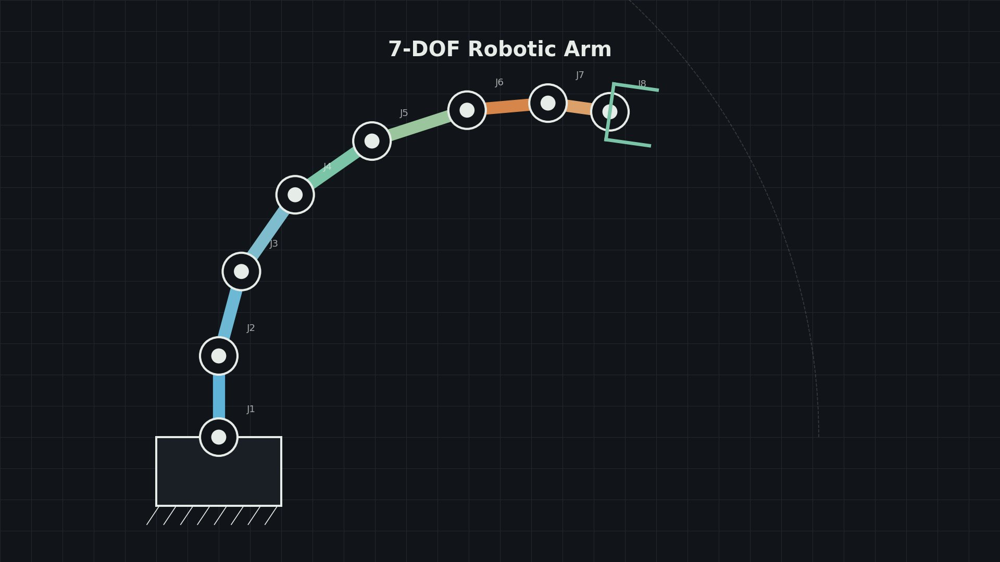
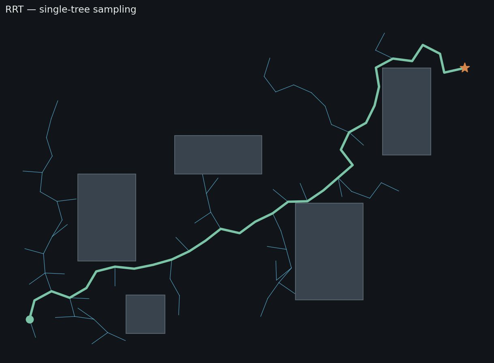
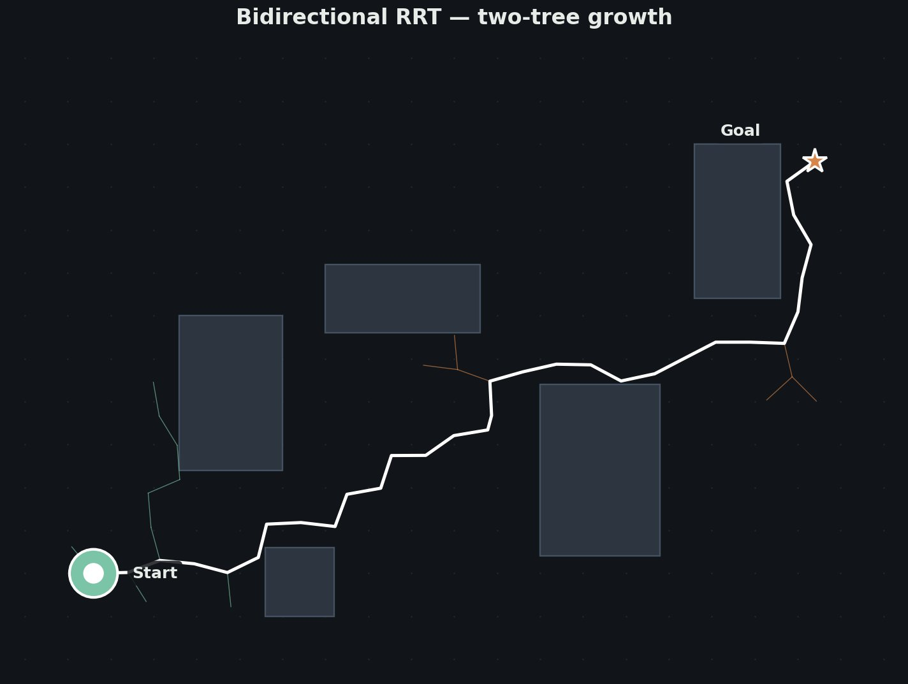
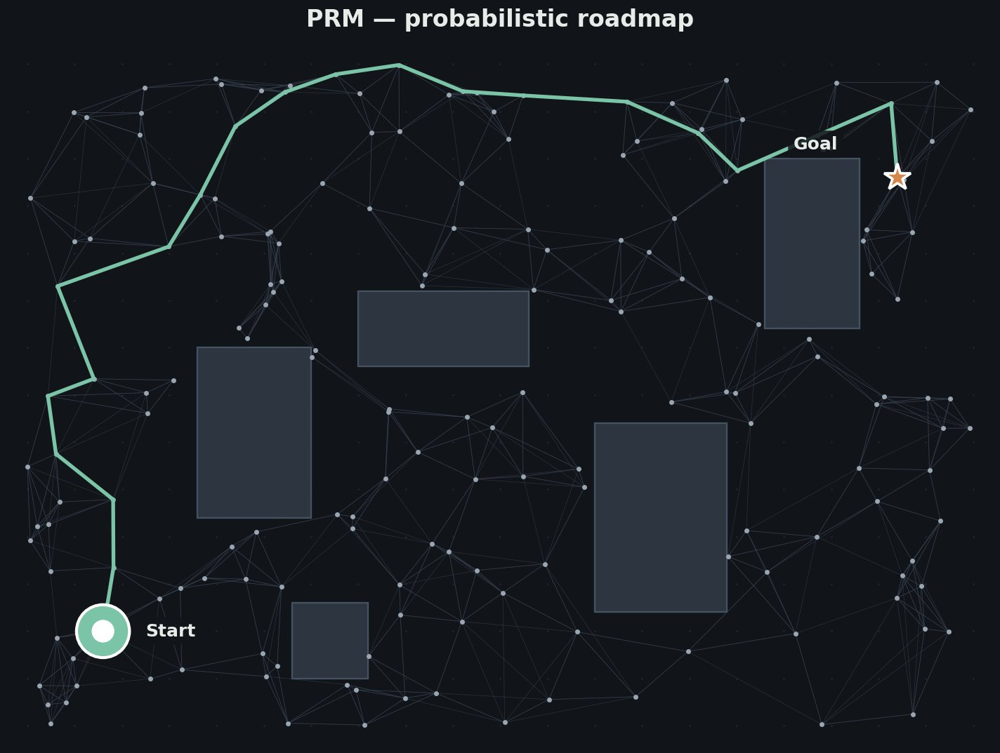

控制工程
- Regelungstechnik A
- Regelungstechnik B
- Robotics I
- Robotics II
- Nonlinear Control Systems
從經典 PID 到狀態空間、Lyapunov 穩定性，再到機器人運動學和非線性觀測器——把如何讓一個系統按預期運動這件事徹底搞懂的過程。
個人主頁
您好，我是
現在在埃爾朗根讀機電一體化碩士。大部分時間花在控制迴路、機械臂、以及讓它們更聰明的 AI 工具上。
關於我
我大學主修材料工程，但真正讓我好奇的，一直是機器本身——以及讓它們變得智慧的那些技術。看著人形機器人學會走路、抓取、像人一樣推理，是把我帶進這個領域的根本原因。
我相信人形機器人和具身智慧就是未來。
所以我轉到機電一體化，跑到 Erlangen 讀碩士——把控制迴路、機械臂、和現代 AI 工具一個個學會。早晚它們會走進每個廚房和每條產線，我希望那時候我也在那裡。
Now
2026 年 10 月
教育經歷
在讀 · 預計 2028.03 畢業
課程
從經典 PID 到狀態空間、Lyapunov 穩定性，再到機器人運動學和非線性觀測器——把如何讓一個系統按預期運動這件事徹底搞懂的過程。
正在從手撕梯度開始補齊 ML/DL 的數學和工程鏈路。目標是把它和我的控制經驗結合，做 learning-based control。
從微觀的半導體到宏觀的生產線——讓我對一臺機器人是如何被打造出來的，有完整的工程視角。
技能
語言
專案








聯絡我